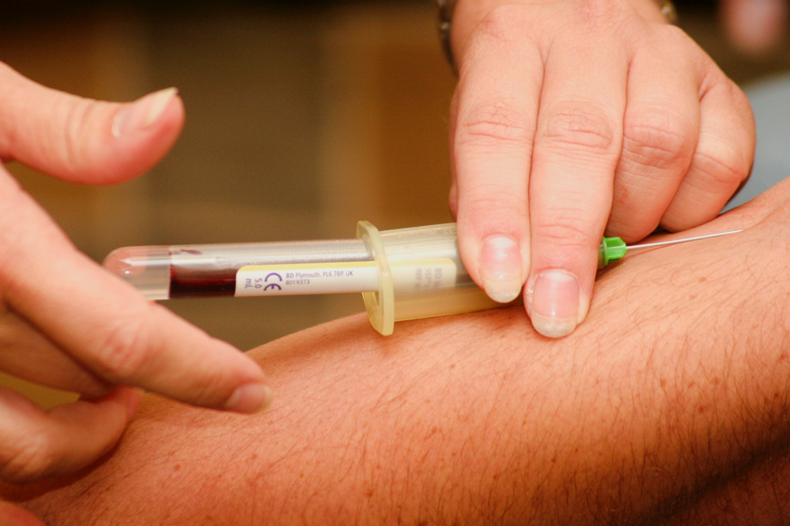

Other popular streams to have a look at

After 10th many students think they have achieved their milesone. But its not over yet. In fact, it has just started.
Till now, everything for you was well sorted and defined. But now onwards, things start being complicated. Many students
think that there are only three options in front of them i.e. Science, Commerce and Arts.
Ever thought about other career options?
Ever thought about other things or courses you can do to enhance your future?
Here are some other career options for you :-
- Diploma Courses:
 Diploma courses or polytechnic courses offers you three years course which gives you a variety of career options in
engineering-related fields. This option is best for those who have already decided to make their career in technical
or engineering sector.You can also choose to pursue a full-fledged engineering degree after you complete your diploma
course. By doing this, you can directly enter into 2nd year of your 4-years degree. Another major advantage of diploma
is this course ensures you a lot of practical knowledge which is required in engineering sector.
Diploma courses or polytechnic courses offers you three years course which gives you a variety of career options in
engineering-related fields. This option is best for those who have already decided to make their career in technical
or engineering sector.You can also choose to pursue a full-fledged engineering degree after you complete your diploma
course. By doing this, you can directly enter into 2nd year of your 4-years degree. Another major advantage of diploma
is this course ensures you a lot of practical knowledge which is required in engineering sector. - Paramedical courses:
 Graduation is not compulsory for many of the paramedical work needs in the Healthcare or Medical field. Paramedical courses helps an individual to change themselves into a competent health care worker.They can be performed by any lisenced professional under the supervision of a well qualified medical professional or expert. Courses like MBBS, BDS, B.V.Sc. and BAMS are much sought after ones and requires much more difficult entrance examinations like NEET. Also due to immense competition, paramedical courses is he best option for the ones who want o pursue their career in medical sector without much efforts. - Computer courses:
 Development in technical or computer sector need not to be mentioned. Also growing demand in technical field enhance you much
more job opportunities than others. Web development, App development, M.S. office, photoshop, Graphic designing, SEO and many many
more things are there which are in demand in 21st century. Also various programming languages such as Python, Java, C++, etc.
provide you extra-ordinary and well-paid job options in your future. Certification in such things enhances your job opportunities
and makes you stand different than the crowd.
Development in technical or computer sector need not to be mentioned. Also growing demand in technical field enhance you much
more job opportunities than others. Web development, App development, M.S. office, photoshop, Graphic designing, SEO and many many
more things are there which are in demand in 21st century. Also various programming languages such as Python, Java, C++, etc.
provide you extra-ordinary and well-paid job options in your future. Certification in such things enhances your job opportunities
and makes you stand different than the crowd. - Vocational courses:
 Vocational courses are an educational discipline that allows an individual to acquire efficiant skills that are required for a
particular graduation. These are non academic courses which are not there in your syllabus but can definately boost your career.
Vocational courses are also provided in skilled trades like automotive repair, plumbing, heating and air conditioning. Other
courses such as web development or app development are also included in these vocational courses.
Vocational courses are an educational discipline that allows an individual to acquire efficiant skills that are required for a
particular graduation. These are non academic courses which are not there in your syllabus but can definately boost your career.
Vocational courses are also provided in skilled trades like automotive repair, plumbing, heating and air conditioning. Other
courses such as web development or app development are also included in these vocational courses.